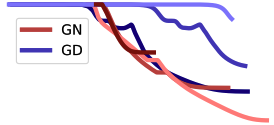
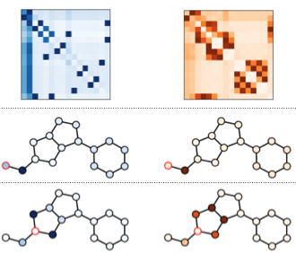
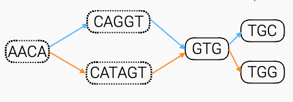
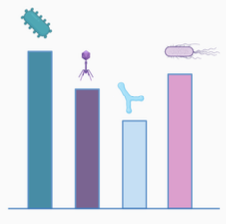

|
Romain Menegaux I am a Starting Research Fellow at Inria Grenoble in the Thoth team team, supervised by Julien Mairal.
I earned my PhD in machine learning and bioinformatics from Mines Paristech as part of the CBIO team, under the supervision of Jean-Philippe Vert.
|

|
Research
I'm interested in applications of machine learning to healthcare and biology, with a focus on Transformers, graph neural networks and optimization. I also have ongoing projects in flow matching, 3D-scene modelling and geoscience.
|

|
LUDVIG: Learning-free Uplifting of 2D Visual features to Gaussian Splatting scenes
Juliette Marrie, Romain Menegaux, Michael Arbel, Diane Larius, Julien Mairal, Preprint, 2024 Lifting 2D visual features from pretrained models to 3D Gaussian Splatting scenes with a simple aggregation scheme and no optimization. |
|

|
Rethinking Gauss-Newton for learning over-parameterized models
Michael Arbel, Romain Menegaux, Pierre Wolinski, NeurIPS 2023 A global convergence result for Gauss-Newton in over-parameterized one-hidden layer neural networks, and an empirical study showing hidden learning with small initialization and small step-size. |
|

|
Self-Attention in Colors: Another Take on Encoding Graph Structure in Transformers
Romain Menegaux, Emmanuel Jehanno, Margot Selosse, Julien Mairal, TMLR 2023
Encoding graph structure in Transformers for molecule property prediction, and introducing a novel attention mechanism.
|
|

|
Embedding the de Bruijn graph, and applications to metagenomics
Romain Menegaux, Jean-Philippe Vert, BiorXiv Preprint 2020 Vocabulary reduction in DNA textual embeddings by mapping DNA "tokens" to their corresponding nodes in a de Bruijn graph. |
|

|
Continuous embeddings of DNA sequencing reads and application to metagenomics
Romain Menegaux, Jean-Philippe Vert, Best Paper at the ICML 2018 Comp. Bio. Workshop Journal of Computational Biology 2019 DNA sequence classification with textual embeddings, paper for the fastDNA software. |
Selected Teaching |
|
|
Kernel Methods in Machine Learning
African Master's in Machine Intelligence, 2020; 2022; 2024 Teaching Assistant with Jean-Philippe Vert |

|
Intro to Deep Learning
Sacl-AI 4 Science Workshop, 2024 |
|
Website template graciously lifted from source code. |